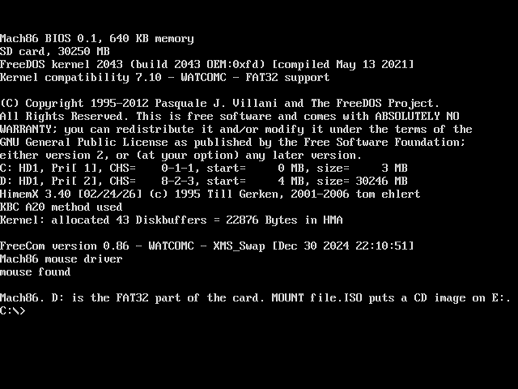
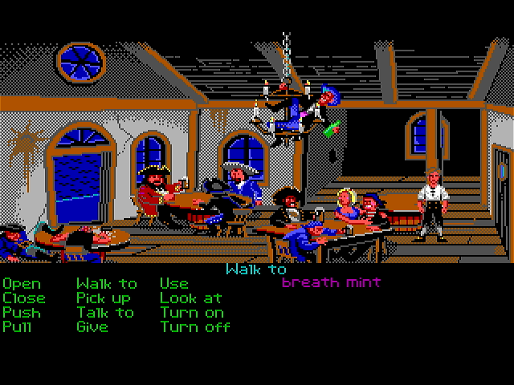
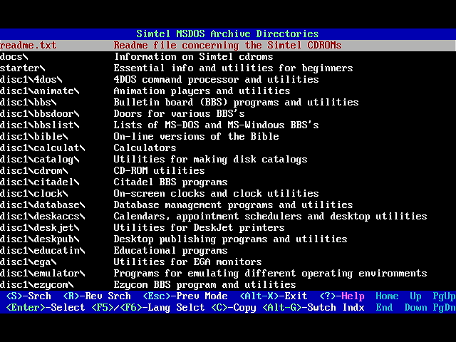

33MHz
486SX-class CPU
21.4MIPS
Measured on a board
16KB
Original BIOS
1.7M
Instruction tests from a real 386
DOOM
Shareware episode runs
Mach86 is a clean-room PC-compatible computer in plain Verilog. It boots DOS from an SD card and runs DOS software and games on small ECP5 boards, with its own CPU core, BIOS, VGA, sound and USB input.

The CPU, its microcode and the BIOS are original work, written from scratch against public documentation (clean-room policy) and checked instruction by instruction against a reference model and against test vectors captured from real hardware.
CPU, memory, graphics, sound, input and storage, all implemented in gateware and firmware written for this project.
The 486SX instruction set, 16- and 32-bit, including BSWAP, CMPXCHG and XADD, at about 21 million instructions a second, measured on a board. A decoded-instruction cache and microcode make most instructions one or two clock cycles. How the CPU works →
32-bit code and stacks, interrupts and faults through gates: enough for DOS/4GW, and DOOM's shareware episode runs. Extended memory through HimemX. Details →
Text, CGA, EGA and VGA modes, up to 640×480 in 16 colours and 320×200 in 256 colours, over DVI/HDMI.
PC speaker and AdLib (OPL2) sound, delivered over HDMI audio, S/PDIF or a one-pin DAC.
Low-speed USB keyboards and mice that speak the HID boot protocol. Includes an INT 33h mouse driver.
The microSD card is the hard disk: a boot partition, FAT32 for your programs, and MOUNT file.ISO to put a CD image on E:.
Written from scratch for Mach86. Boots FreeDOS.
SLOW n slows the CPU for programs that break on fast machines, like the Monkey Island demo's sound driver.
Plain Verilog that builds with Yosys and nextpnr. No vendor tools required.
Captured from Mach86 itself, not an emulator. Click to enlarge.


An x86 is only as good as its corner cases. Mach86 is tested at every level, from single instructions up to the pins.
Test vectors captured from a real 386, run against the reference model, instruction by instruction.
The gateware runs alongside a reference model written in C, and the two are compared after every instruction.
The whole machine is simulated down to its pins, and booted in simulation before it goes on a board. How it is tested →
Mach86 runs on the three primary computers from Machdyne.
The source, the BIOS, the tests and the documentation are on GitHub. To build you need a recent OSS CAD Suite, a C compiler, NASM, Python 3 and mtools; the tests also use Verilator and Icarus Verilog.